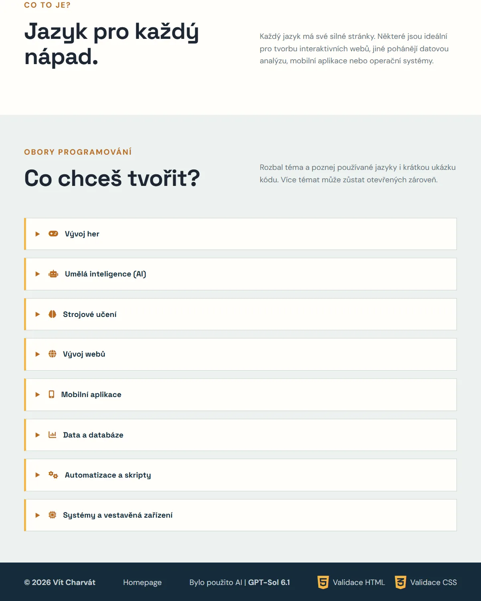
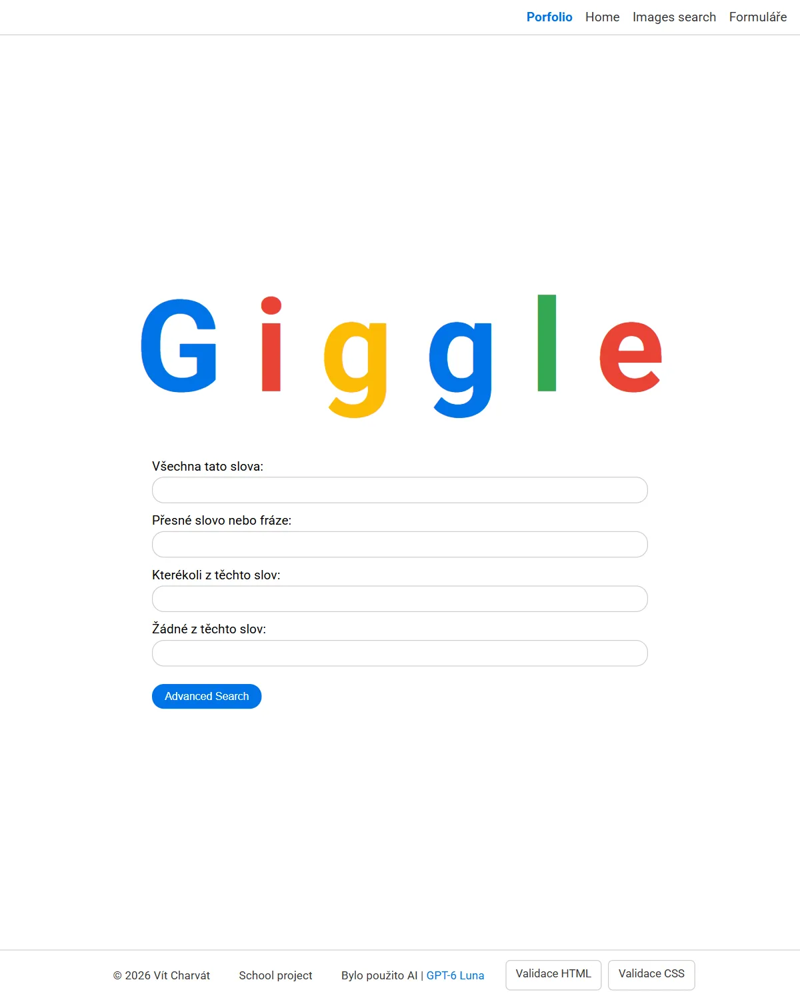
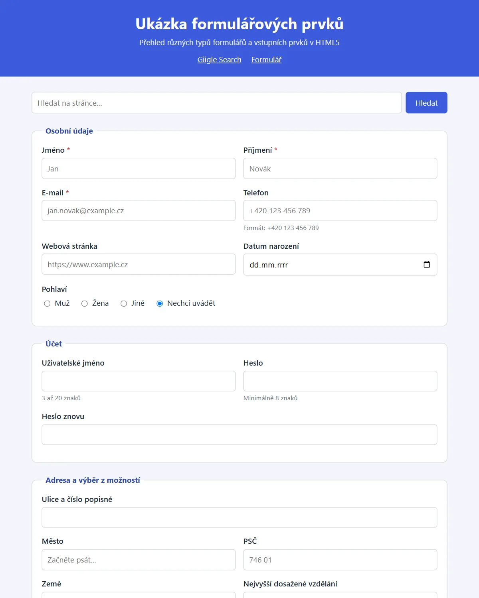

School projects
-

Programming Languages
School website · September 2026
Which languages are used for games, AI, websites and mobile apps, with a short code sample for each field.
-

Giggle
School exercise · October 2026
My own search engine modeled on Google: a home page, image search, advanced search and forms.
A closer look


